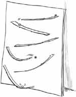
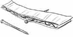
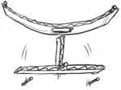
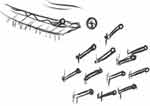

Something You Can Do
Do you sometimes have little boys, like Davy, come over to play? Or maybe you have younger brothers (or sisters) who need something to do inside? Here is a fun carpentry project, and it can make a nice gift, too. With a few simple tools you can make
A Marble Run
You will need:
- a piece of 1/2” plywood (18“x 36” or bigger)
- 1 1/2”-wide strips of corrugated cardboard, cut “across the grain”
- 2” finish nails
- hammer
- marbles

- The plywood will be your back board. Plan the marble run something like the picture. You will need to experiment to find the best places for the strips.
- Now nail the strips into position, through the holes in the corrugated cardboard. You can make it more complicated if you want, but the main idea is to line up the cardboard strips so that the marbles roll back and forth as they go down. Lean it against a wall, and run the marbles down!
- For a challenge, here are some interesting variations:
A Teeter-Totter
Tape together an upside-down T that pivots on a nail. Center it under a curved strip, with a hole for a drop off. The marbles should drop to either side, and tip it back and forth. Remember to set up two different runs underneath.Chimes
Underneath a drop off, pound in a set of nails. Now listen to the musical sound of clinking marbles!
